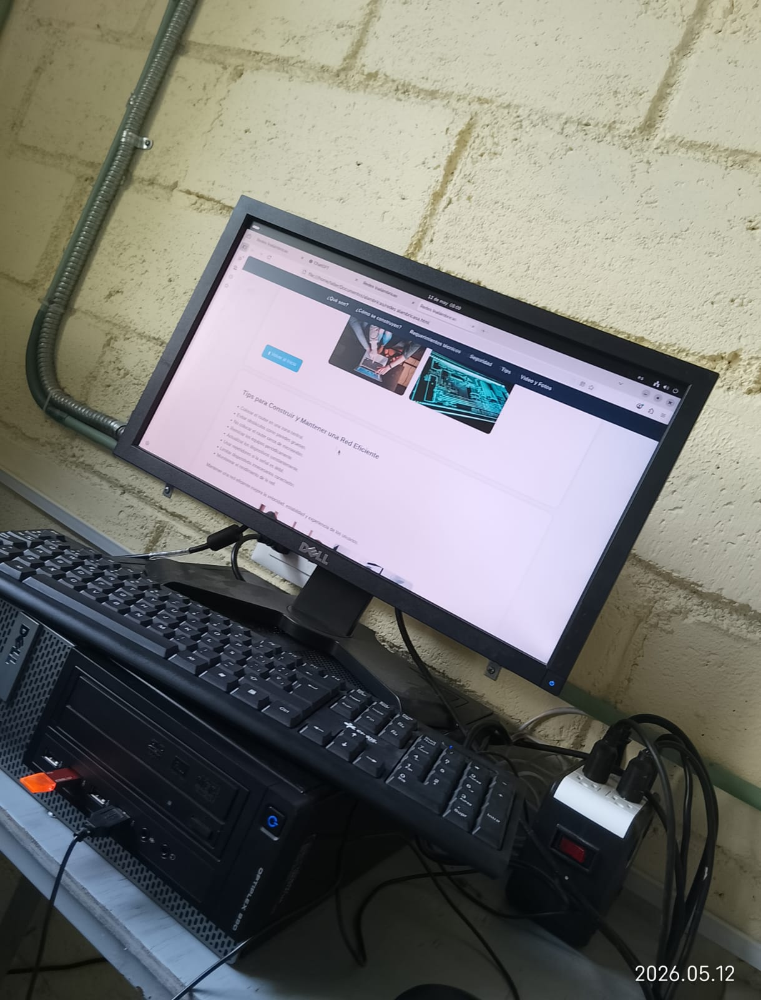
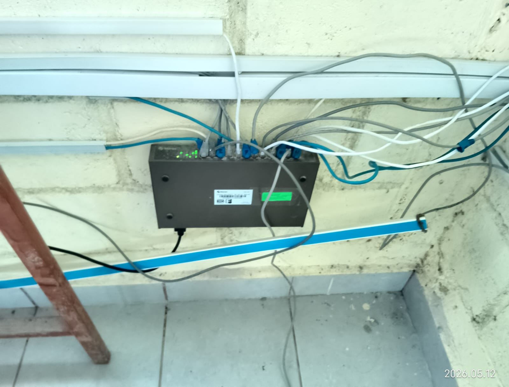
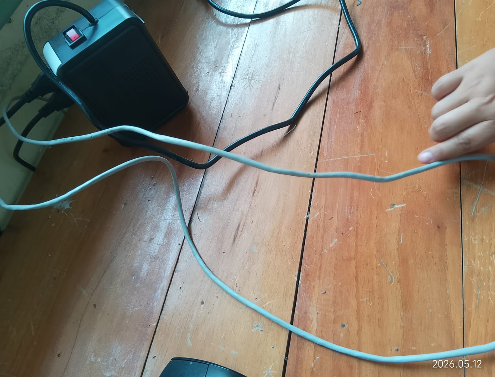
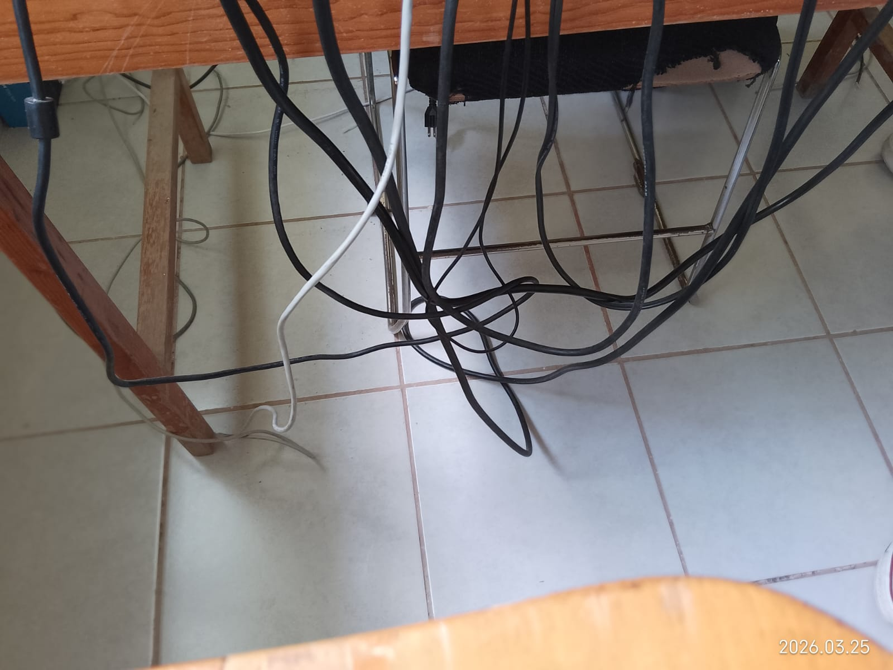

Las redes alámbricas son sistemas de comunicación que conectan computadoras, impresoras, servidores y otros dispositivos mediante cables físicos para compartir información, archivos, internet y recursos.
Estas redes utilizan medios de transmisión como:
Cable UTP (par trenzado)
Cable coaxial
Fibra óptica
Se caracterizan por ofrecer:
Mayor estabilidad de conexión
Velocidad constante
Menor interferencia
Más seguridad que muchas redes inalámbricas
Son muy utilizadas en:
Escuelas
Empresas
Oficinas
Centros de datos
Hogares


¿Cómo se construyen?
La construcción de una red alámbrica requiere planificación y organización. Generalmente se siguen estos pasos:
Planeación de la red: Primero se analiza:
Cuántos dispositivos se conectarán
Qué área cubrirá la red
Qué velocidad se necesita
Tipo de uso (oficina, escuela, hogar, empresa)
Diseño de la topología:
La topología es la forma en que se conectan los equipos.
Las más usadas son:
Topología estrella: todos los dispositivos se conectan a un switch central.
Topología bus: todos usan un mismo cable principal.
Topología anillo: los equipos forman un círculo de conexión.
Instalación del cableado:
Durante esta etapa se:
Colocan canaletas
Instalan racks
Distribuyen cables
Etiquetan conexiones
Es importante evitar:
Humedad
Exceso de calor
Interferencias eléctricas
Instalación de dispositivos:
Se conectan:
Switches
Routers
Patch panels
Servidores
Todo debe quedar organizado y correctamente identificado.
Configuración de red:
Incluye:
Direcciones IP
Máscaras de subred
DNS
Gateway
Seguridad


Requerimientos Técnicos
Hardware y Software
Switches administrables
Routers:
Administran conexiones externas e internas.